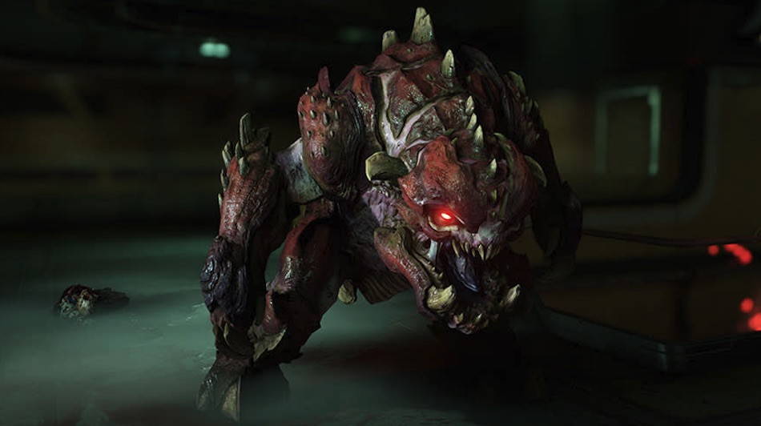
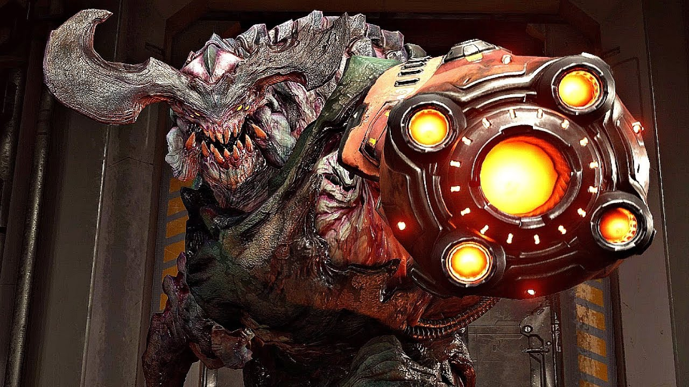
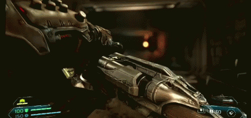
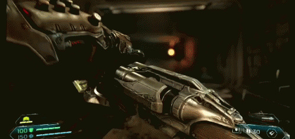

Демони вперше дали йому прізвисько «Doom Slayer» (Знищувач Року) і також називають його Розкутий Хижак, Звір та Ходячий Пекло. UAC (Союз Об'єднаних Націй) називає його DOOM Marine, або The Slayer (Знищувач).
До того, як персонаж отримав ці епітети в історії, його найчастіше називали Doomguy в фанатському середовищі. Це прізвисько згадується в грі Doom Eternal і використовується в субтитрах його діалогів.
Він задуманий як остання ітерація та продовження класичного DOOM Marine, який є головним героєм більшості серії. Згідно з Томом Голлом і Джоном Ромеро (які працювали над оригінальним Doom), оригінальна версія DOOM Marine була онуком командира Кіна та прапраправнуком Вільяма Дж. Блазковича. Зв'язок Doom Slayer з родиною Блазковичів може бути або не бути канонічним для сучасної версії.
Розробники спочатку заявили, що головний герой не має канонічного імені, оскільки він є уособленням гравця.
У перших іграх морпіха/Знищувача не називають по імені. Ромеро пояснив цей вибір як спосіб збільшити занурення гравця: «Морпіх у Doom не має імені, бо це повинен бути ТИ, гравець».
Коли Джона Ромеро запитали безпосередньо в Twitter, він жартома відповів, що його ім'я насправді Doom Guy (з пробілом, двома словами — перше слово як ім'я, друге як прізвище).
один з найстрашніших демонів у Doom. Він має величезне червоне сферичне тіло з шипами, палаючими очима і відкритим ротом. З рота виходять смертоносні огнені кулі. На спині демон має роги і шипи, що підсилюють його страшний вигляд.
один з найвідоміших демонів у Doom, відомий своєю грубою силою та витривалістю. Це великий мускулистий демон з темно-рожевим або червоним тілом і товстою шорсткою шкірою. Pinky має великий череп з палаючими очима, потужні ноги та атакуючі щелепи. Він не має рогів або крил, але його зуби є дуже загрозливими.
один з найстрашніших демонів у Doom, поєднуючи магію і технології. Це гігантський кібернетичний демон з червоним тілом і потужними механічними елементами, такими як броня і протези. Має великі роги, міцні ноги і величезну ракету на спині для дальніх атак.

новий, небезпечний демон з Doom Eternal. Це механічний демон з частинами органічного тіла, що має потужний корпус з чотирма ногами, ракетними установками і великим лезом для ближнього бою. На спині у нього є системи для ракетних і енергетичних атак.
 
